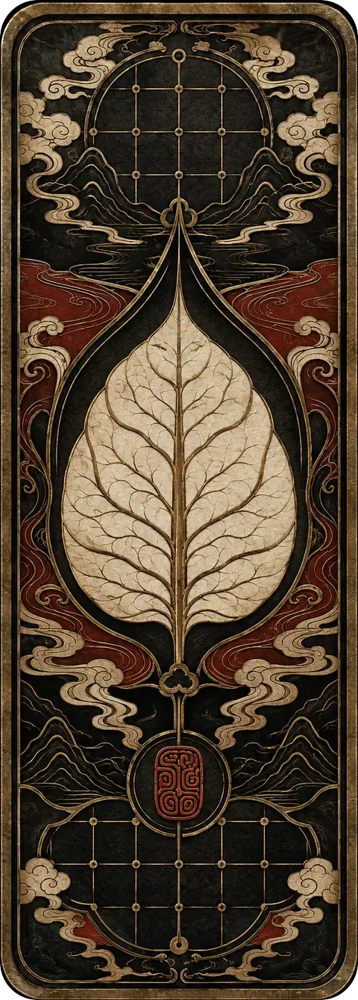
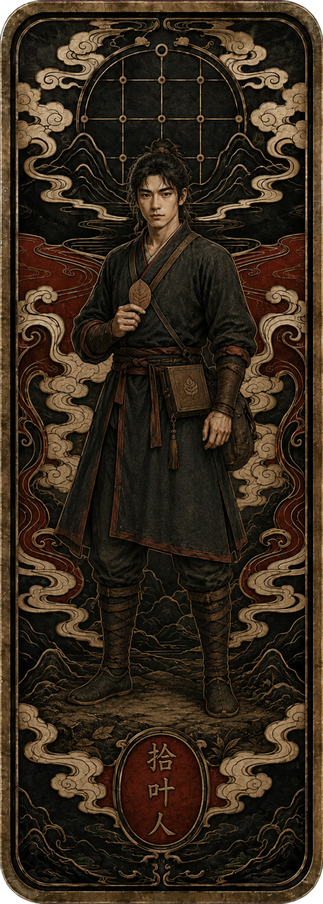
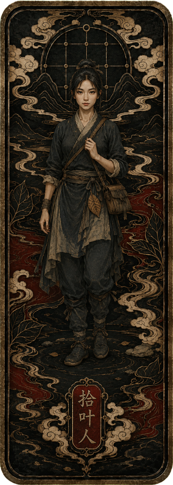
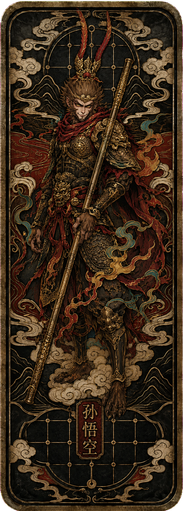
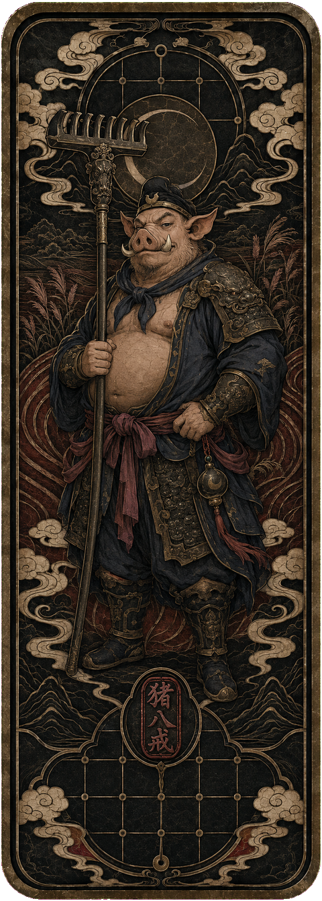
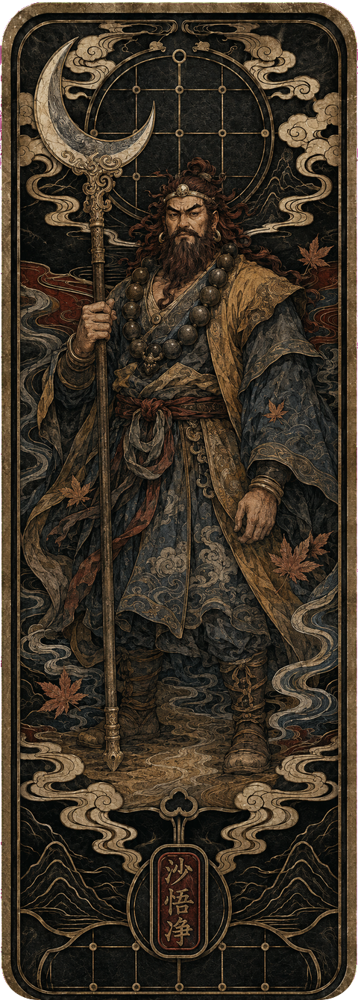
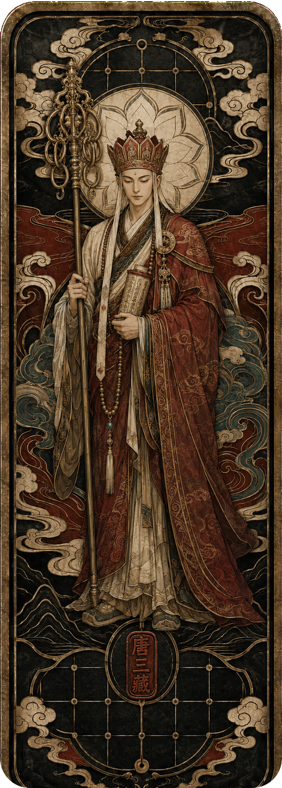

起点
无名叶市
旧谱流通之地，所有故事都从一场不明来历的牌局开始。
THE WORLD OF YEXIPU
传说世间万事，皆曾被记在一部《叶戏谱》中。后来谱页散佚，旧事失名，人的命运也随之变得残缺。
玩家将成为一名“拾叶人”，踏入由牌局维系秩序的城镇与山野。你手中的每张叶牌，既是招式、筹码，也是某段往事的证词。赢下一局，只是开始；辨明牌背后的真相，才是旅途真正的目的。
人争一时输赢，叶记百年兴亡。
旧谱流通之地，所有故事都从一场不明来历的牌局开始。
不同流派守着各自的规则，也守着不愿被翻开的旧事。
当散叶重聚，玩家必须决定哪一种历史应被写进新谱。
GAMEPLAY
易于入局，难于穷尽。规则强调“手牌经营、谱系组合与角色抉择”三层策略，让每次出牌都同时作用于战局与故事。
从有限手牌中识别牌势、安排出牌顺序。每一次取舍都会改变牌局的走向。
战斗卡牌与收藏谱叶完全独立。收藏多少不会改变牌局强度，胜负只由规则理解与临场决策决定。

牌势谱系抉择赢得对局即可获得一次谱叶抽取机会；有效参与则获得残叶，用来修缮个人谱匣的展示效果。
普通谱叶来自胜利抽取，特殊谱叶只在对应故事副本中获得。收集散叶，逐步复原失落的古老传说。
IDENTITIES & BATTLE CARDS
玩家从“拾叶人”起步，以男女两种角色外观进入古谱。身份装扮记录收藏进度，但不会改变牌局强度。
鼠标悬停、键盘聚焦或点击卡牌即可翻面第一阶段身份「拾叶人」

初入古谱的旅人，从第一枚散叶开始寻找失落故事。

携谱匣行走残卷，在一次次牌局中收录旧日见证。
从牌局与副本中重见古老神话

金箍横扫云海，桀骜之名从牌背重新显现。

月下负耙而行，诙谐之外亦有久经风尘的担当。

流沙沉静如铁，守住队伍中最不动摇的一线。

持经向西，以凡人之身维系一段漫长而坚定的旅途。
玩家身份与战斗卡牌分区展示；收藏与装扮只记录历程，不提供任何对局数值加成。
ROADMAP
官网已经为版本公告、更新补丁、新角色档案与玩家社区入口预留位置。项目进展将按真实开发节奏逐步公开。
基础回合、牌型判断与胜负流程
首批叶牌、角色立绘与核心界面
角色事件、谱页收集与世界线索
新角色、新牌组与主题章节持续扩展